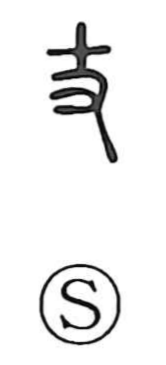

丈

Uncategorized
Kun: take | On: jo
cane (original) ・ unit of length ・ ten shaku
Explanation
This character combines the form of a tree branch with the hand 又, picturing a branch grasped as a support—a scene that stands at the origin of the later graph 杖, “cane.” The cross-shaped element here is not the numeral ‘ten’ but the branch itself. Although it uses the same parts as 支, they are joined in a different way. From measuring with a staff, the graph came to signify a unit of length equal to ten shaku (about three meters), as in the Zuo Zhuan’s phrase 巡丈城, “to go around and take the measure of a fortress.” By extension, 丈人 names a mature adult, sometimes explained as one of thirty years.